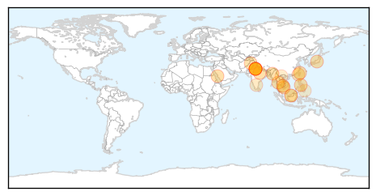

Dengue Fever
30-Day Web Trend
19 alerts, 6 warnings

30-Day Twitter Trend
3 alerts, 0 warnings

Article Locations
Article Confidences

Top Articles:
- 0.994
- Spectre of diseases haunts Gujarat
- 0.992
- Six dengue patients in Manipur
- 0.991
- Dengue, malaria cases rise in Rajasthan, separate OPDs set up
- 0.990
- More than 20,500 dengue infections and 56 confirmed deaths in Taiwan
- 0.990
- Kotwa still in grip of dengue scare
- 0.989
- Dengue cases drop in Jeddah
- 0.987
- Training course organised for health workers in “dengue hot spots”
- 0.982
- El Nino Linked to Dengue Epidemic Shows New University of Pittsburgh Research
- 0.980
- Dengue epidemics linked to high temperatures during strong El Nino season
- 0.970
- Dengue’s link to El Niño, National, Phnom Penh Post
- 0.960
- Number of dengue patients surge at RIMS
- 0.956
- 2010-2014 Data On Dengue Deaths Compiled by Delhi Civic Bodies Are Inconsistent
- 0.951
- On the rise: 20 patients test positive for dengue in Batkhela
- 0.877
- India Struggles with the Worst Outbreak of Dengue Fever
- 0.866
- Dengue fever outbreak in India has hospitals overloaded with patients 05/10/2015
- 0.852
- School Staff Learns from NCKU’s Fight against Dengue
- 0.815
- University of Florida News
- 0.797
- India: Delhi dengue outbreak grows, some doctors slacking
- 0.698
- Can Ayurveda help dengue patients?
- 0.653
- Florida News Straight from the Source
- 0.613
- Preventive medicine faces staff shortages
- 0.596
- Palace says DOH is on top of dengue outbreak, notes decline of cases in 10 regions - Philippines
- 0.565
- Doctors advise Delhi govt to issue advisory on dengue tests
Top Tweets:
-
No tweets found for Oct 05, 2015
Pertussis
30-Day Web Trend
0 alerts, 0 warnings
30-Day Twitter Trend
0 alerts, 0 warnings

Article Locations

Article Confidences

Top Articles:
-
No articles found for Oct 05, 2015
Top Tweets:
-
No tweets found for Oct 05, 2015